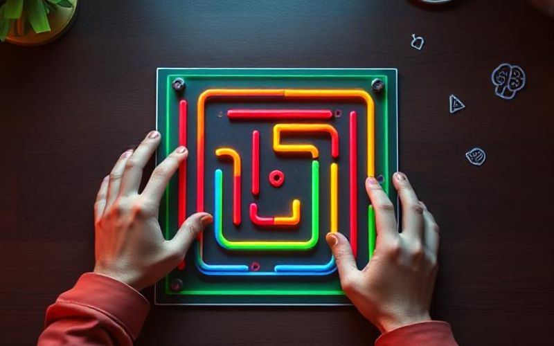
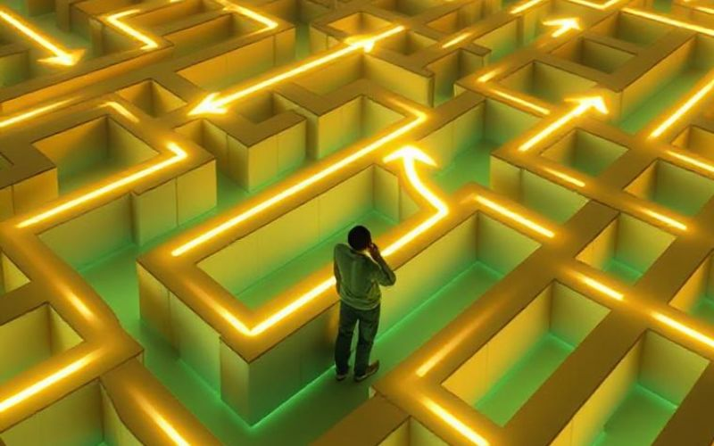
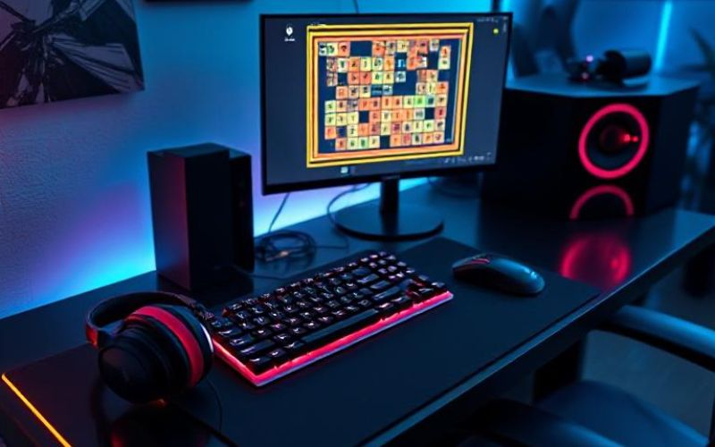
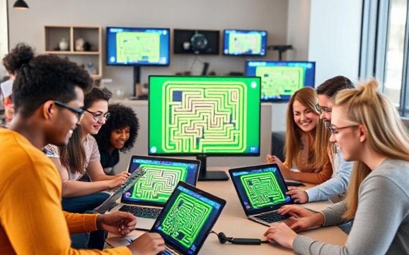

Top 5 Fun Brain Games That Improve Focus
Playing brain games regularly helps sharpen your focus and memory. Maze games, puzzles, and logic challenges stimulate problem-solving and decision-making. Try Mystic Maze for a few minutes daily and notice how your concentration improves!

How Maze Games Help You Think Smarter
Each move in a maze requires foresight and planning. Mystic Maze trains your brain to think strategically, improving logic, patience, and pattern recognition while offering a fun way to relieve stress.

Best Gaming Accessories for Maze Lovers
Upgrade your maze-gaming experience with top accessories for precision and comfort. Choose the gear that matches your style and play smarter every time you enter the Mystic Maze!
How Brain Games Support Mental Health
Playing strategic games like Mystic Maze helps reduce stress, increase mindfulness, and improve focus. Short daily sessions can boost your mood and productivity.

Join the Mystic Maze Community
Share your scores, connect with other players, and discover new puzzle challenges every week. Stay motivated, stay sharp, and have fun while training your brain!